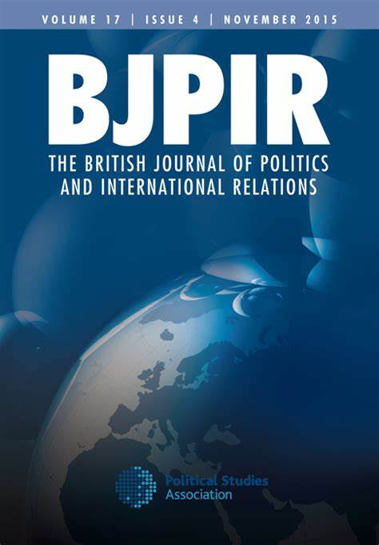

收录于合集 #新刊速递 123个


期刊简介

英国政治与国际关系杂志（BJPIR）是一份国际期刊，发表国际关系、比较政治、公共政策、政治理论和英国政治与政策方面创新的当代学术成果。它是世界上最重要的英国政治研究杂志。该期刊为出版伦理委员会（COPE）成员。2019年其影响因子为2.539。
本期编委
【编译】 扎西旺姆 周玫琳 王川 吴皓玥 许文婷
【审校】 赵雷 周玫琳
【排版】 张越涵
本期目录
1. 用原语言剖析外交政策领导人：对领导特质形成及其稳定性的新认识
Profiling foreign policy leaders in their own language: New insights into the stability and formation of leadership traits
2. 英国在联合国的特殊责任：规范语境下的外交实践
The United Kingdom’s special responsibilities at the United Nations: Diplomatic practice in normative context
3.政治中的领导人继任：再论民主与专制的二分
Leadership succession in politics: The democracy/autocracy divide revisited
4.体育与英国的软实力：珠穆朗玛峰的案例
Sport and UK soft power: The case of Mount Everest
5.“国际化议程”和中国大学的崛起：无可避免地侵蚀学术自由？
The ‘internationalisation agenda’ and the rise of the Chinese university: Towards the inevitable erosion of academic freedom?
01
用原语言剖析外交政策领导人：对领导特质形成及其稳定性的新认识
【题目】 Profiling foreign policy leaders in their own language: New insights into the stability and formation of leadership traits
【作者】 Christian Rabini，德国埃希施塔特-因戈尔施塔特天主教大学历史和社会科学学院。Klaus Brummer，德国埃希施塔特- 因戈尔施塔特天主教大学历史和社会科学学院。Katharina Dimmroth，德国埃希施塔特-因戈尔施塔特天主教大学历史和社会科学学院。Mischa Hansel，德国波恩发展与和平基金会。
【摘要】 领导人在国际政治中很重要。远距离评估政治领导人心理特征的主要工具之一是领导人特质分析（Leadership Trait Analysis）。为了方便实证研究，用于自动文本分析的领导人特质分析编码方案已开发，以取代手工编码。但是，该编码方案一直以来只适用于英文文本。为了扩大研究机会，本文提出了一种新颖的德文领导人特质分析编码方案。这种编码方案可以在德文原文的基础上从事实证分析，从而为德国外交政策提供新的或不同的启示。同时，它有助于将自动内容分析的范围扩大到英文之外更广泛的语言文本之中。
Leaders matter in international politics. One of the main tools for assessing at-a-distance psychological characteristics of political leaders is Leadership Trait Analysis. To facilitate empirical studies, a Leadership Trait Analysis coding scheme for automated text analysis was developed to replace hand- coding. However, the coding scheme has been available only for English- language texts. To broaden research opportunities, this article presents a novel Leadership Trait Analysis coding scheme for the German language. This coding scheme allows engaging in empirical analysis based on original German language sources, thereby shedding new or different light on German foreign policy. At the same time, it contributes to moving automated content analysis beyond the English language more generally.
【编译】 扎西旺姆
【审校】 赵雷
02
英国在联合国的特殊责任：规范语境下的外交实践
【题目】 The United Kingdom’s special responsibilities at the United Nations: Diplomatic practice in normative context
【作者】 Jason Ralph，利兹大学政治学与国际研究学院教授；Jess Gifkins，曼彻斯特大学国际关系学讲师；Samuel Jarvis，约克圣约翰大学国际关系学讲师。
【摘要】 2017年，特雷莎·梅在一场面向联合国的演讲中提到了英国的“特殊责任”。本文考察英国如何在联合国合适地履行这些责任。作者提供了一种创新的分析框架，该框架融合了英国学派的国际社会理论和外交实践理论，并抵达一种认识：称英国通过积极有为的外交（diplomatic activism）弥补其物质（实力）上相对衰落的说法是有缺陷的。基于如下两方面能力，作者承认常任理事国的特殊责任：第一，调和联合国安理会的“协调”和“治理”功能的能力；第二，在可能达成共识的领域以物质性贡献促成治理目标。作者援引大量的访谈数据，并以维和行动方面正在进行的争论为例，指出国家在外交上“超限挑战（punch above its weight）”的能力与其物质承诺和安理会中更包容的取向有关。
In a 2017 speech to the United Nations, Theresa May referred to the United Kingdom’s ‘special responsibilities’. This article examines how the United Kingdom can properly discharge those responsibilities at the United Nations. We offer an innovative analytical framework that merges English School theory of international society with diplomatic practice theory, and find that there are limits to the claim that the United Kingdom compensates for its relative material decline through diplomatic activism. We identify the special responsibility of the permanent member in terms of a capacity to reconcile the ‘concert’ and ‘governance’ functions of the Council, and to contribute materially to the achievement of governance objectives in areas where consensus is possible. Drawing on extensive interview data, and illustrating with reference to current debates on peacekeeping, we find that a state’s capacity to ‘punch above its weight’ diplomatically is linked to its material commitments and to a more inclusive approach in the Council.
【编译】 周玫琳
【审校】 赵雷
03
政治中的领导人继任：再论民主与专制的二分
【题目】 Leadership succession in politics: The democracy/autocracy divide revisited
【作者】 Ludger Helms，因斯布鲁克大学政治学和社会学学院政治学系教授。
【摘要】 领导人的继任是一个真正无处不在的现象，具有多重和广泛的影响，这也解释了为什么继任问题在国际文献中受到极大关注。然而，对这一领域的大多数贡献仍然集中在民主或非民主制度下的政治继任问题上。本文对民主国家和专制国家行政首脑层面的领导人继任问题的关键方面进行了综合分析。通过跨时空的比较评估，本文揭示了民主政体和专制政体中领导人继任的几个特点，对既定的观念和固有的印象提出了挑战。所确定的经验性矛盾表明，领导人上台和下台的方式应成为政治制度概念的一个更明确的部分，并且应对其各自的民主质量进行比较评价。
Leadership succession marks a truly ubiquitous phenomenon with manifold and wide-ranging implications, which explains the major attention that issues of succession have received in the international literature. Most contributions to the field continue, however, to focus on political succession in either democratic or non-democratic regimes. This article develops an integrated perspective on key aspects of leadership succession at the level of political chief executives in democracies and autocracies. A comparative assessment across time and space reveals several features that challenge established notions, and stereotypes, of leadership succession in democratic and autocratic regimes. The empirical ambivalences identified suggest that the way leaders come to and fall from power should be made a more explicit part of conceptualisations of political regimes, and comparative evaluations of their respective democratic quality.
【编译】 王川
【审校】 赵雷
04
体育与英国的软实力：珠穆朗玛峰的案例
【题目】 Sport and UK soft power: The case of Mount Everest
【作者】 Richard Woodward，英国考文垂大学战略与领导力学院高级讲师。
【摘要】 人们普遍认为，体育为英国的软实力资源提供了重要贡献。本文旨在通过英国探险队前往并最终征服珠穆朗玛峰的案例研究，拓宽和加深我们对英国的体育和软实力的理解。本文以原始档案研究为基础，证明英国国家机构通过系统化和战略性的干预，加速（传播）和美化了（英国探险队）攀登珠穆朗玛峰的故事，以提升英国的威望，并向世界展示英国的良好形象。为此，本文提供了证据，证明体育作为英国外交手段和软实力资源的固有要素，本文提供了远超出既有记录的证据。此外，珠峰的案例为当代的政策制定者提供了重要线索。它尤其表明，如果英国要从其软实力资源中获利，就需要树立一个清晰、可信和一贯的形象。
Sport is widely acknowledged as an important contributor to the United Kingdom’s soft power resources. This article aims to broaden and deepen our understanding of sport and soft power in the United Kingdom through a case study of British expeditions to, and the eventual conquest of, Mount Everest. Based on original archival research, the article demonstrates that British state institutions intervened systematically and strategically to expedite, and massage the story of, the ascent of Everest to burnish British prestige and present a favourable image to the world. In doing so, the article provides evidence that sport has been intrinsic to the United Kingdom’s diplomatic repertoire and soft power assets for considerably longer than existing accounts discern. Moreover, the Everest case offers important cues for contemporary policymakers. In particular, it demonstrates the need for the United Kingdom to project a clear, credible and consistent image if it is to profit from its soft power resources.
【编译】 吴皓玥
【审校】 赵雷
05
**** “国际化议程”和中国大学的崛起：无可避免地侵蚀学术自由？
【题目】 The ‘internationalisation agenda’ and the rise of the Chinese university: Towards the inevitable erosion of academic freedom?
【作者】 凯瑟琳·欧文（Catherine Owen），埃克塞特大学政治学系博士，不列颠学院（British Academy）博士后研究员，2020年9月即将入职埃克塞特大学任讲师。主要研究方向为俄罗斯与中国政策制定、实施过程中的公民参与。
【摘要】 本文批判性地反思了知识生产实践全球化对学术自由的挑战，探讨了国际化议程逻辑内部的矛盾：英国大学基于源自欧洲启蒙价值观中理性主义、经验主义和普世主义的知识生产方式，但却与根源于其他不同的、非自由的，甚至可能是无法比较的价值观的其他大学进行合作。因此，在非自由环境下推进国际化议程时，英国学者发现自己陷入了困境之中：要么合法化并保持知识生产对国家的服从，要么采取通过要求对方顺应自身价值观的方式来实现认识论的殖民主义。本文以中国的学术研究文化为例，对基于冲突性认知文化的大学进行社会科学研究合作的伦理这一问题的热议做出了贡献。
This essay is a critical reflection on the challenge to academic freedom presented by the globalisation of practices of knowledge production. It explores a tension within the logic of the internationalisation agenda: UK universities are premised upon forms of knowledge production whose roots lie in European Enlightenment values of rationalism, empiricism and universalism, yet partnerships are growing with universities premised on rather different, non-liberal and, perhaps, incommensurable values. Therefore, inadvancing the internationalisation agenda in non-liberal environments, UK-based scholars find themselves caught between a rock and a hard place: either legitimising and sustaining the subjection of knowledge production to the state on one hand, or engaging in a form of epistemological colonialism by demanding adherence to ‘our values’ on the other. Using Chinese research culture as an illustration, the article contributes to ongoing debate on the ethics of social science research collaboration with universities based in contrasting epistemological cultures.
【编译】 许文婷
【审校】 赵雷
文章观点不代表本平台观点，本平台评译分享的文章均出于专业学习之用, 不以任何盈利为目的，内容主要呈现对原文的介绍，原文内容请通过各高校购买的数据库自行下载
添加 “国小政”微信
获取最新资讯


国政学人
支持学术公益与知识传播
微信扫一扫赞赏作者 __赞赏
已喜欢，对作者说句悄悄话
取消 __
发送给作者
发送
最多40字，当前共字
上一页 1/3 下一页
长按二维码向我转账
支持学术公益与知识传播
受苹果公司新规定影响，微信 iOS 版的赞赏功能被关闭，可通过二维码转账支持公众号。